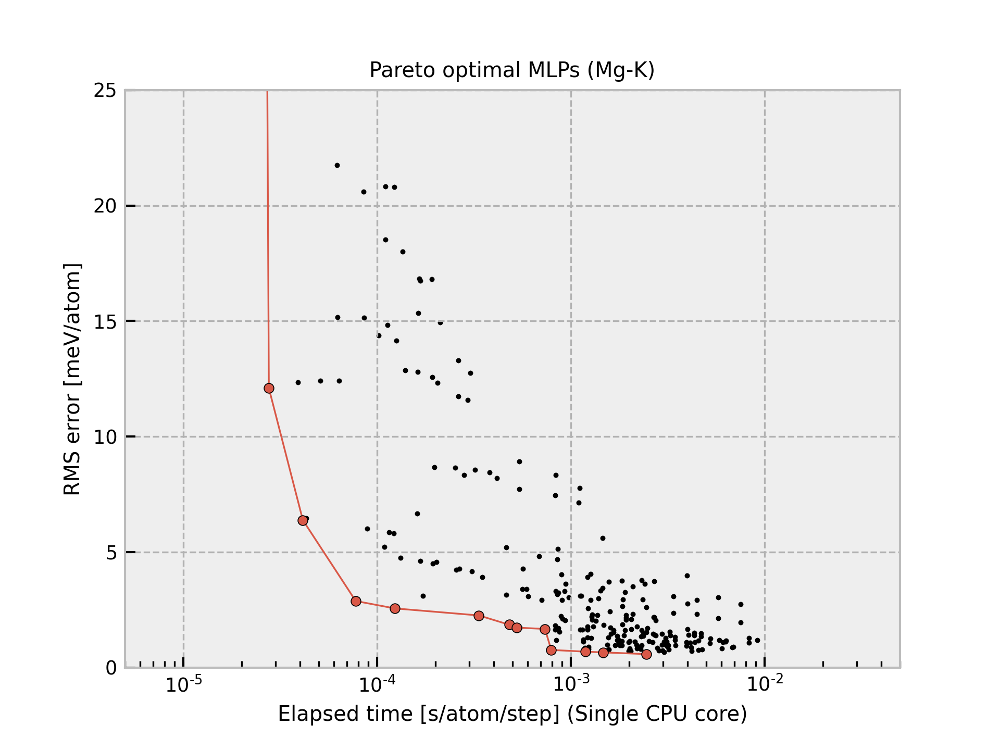

Sn-2020-06-29-dataset-10000-all-icsd¶
{kind=link}
The current structure dataset comprises 10,000 structures generated from unique ICSD prototype structures composed of single elements with zero oxidation state. A more detailed procedure is found in Phys. Rev. B 99, 214108 (2019). The procedure to estimate interatomic potentials from the dataset is found in Phys. Rev. B 99, 214108 (2019) and Phys. Rev. B 102, 174104 (2020).
All Pareto optimal MLPs are available
here.
Name |
Time [ms] (1 core / 36 cores) |
RMSE [meV/atom] / [eV/ang.] |
|---|---|---|
pair-1 |
0.014 / 0.005 |
59.277 / 0.1842 |
pair-15 |
0.016 / 0.005 |
29.214 / 0.1327 |
pair-16 |
0.021 / 0.014 |
28.290 / 0.1866 |
pair-22 |
0.035 / 0.007 |
21.726 / 0.1094 |
pair-23 |
0.036 / 0.010 |
17.688 / 0.1046 |
pair-44 |
0.051 / 0.010 |
16.906 / 0.1036 |
pair-51 |
0.070 / 0.010 |
16.765 / 0.1040 |
pair-25 |
0.085 / 0.016 |
16.313 / 0.1024 |
pair-45 |
0.085 / 0.012 |
14.970 / 0.1008 |
pair-52 |
0.101 / 0.014 |
14.827 / 0.1008 |
pair-46 |
0.105 / 0.015 |
13.663 / 0.0976 |
pair-47 |
0.135 / 0.018 |
12.371 / 0.0953 |
pair-48 |
0.170 / 0.026 |
11.510 / 0.0937 |
pair-55 |
0.235 / 0.027 |
11.017 / 0.0918 |
gtinv-506 |
0.268 / 0.018 |
8.9144 / 0.0619 |
gtinv-590 |
0.280 / 0.019 |
8.8414 / 0.0650 |
gtinv-532 |
0.523 / 0.032 |
8.3634 / 0.0675 |
gtinv-723 |
0.546 / 0.032 |
7.1606 / 0.0572 |
gtinv-763 |
0.547 / 0.032 |
7.1597 / 0.0572 |
gtinv-591 |
0.581 / 0.035 |
5.5256 / 0.0605 |
gtinv-592 |
0.714 / 0.047 |
4.7271 / 0.0549 |
gtinv-791 |
0.749 / 0.043 |
4.2179 / 0.0480 |
gtinv-743 |
0.754 / 0.043 |
4.2173 / 0.0479 |
gtinv-792 |
0.821 / 0.045 |
3.8987 / 0.0477 |
gtinv-593 |
1.115 / 0.060 |
3.4614 / 0.0487 |
gtinv-596 |
1.977 / 0.101 |
3.1425 / 0.0454 |
gtinv-599 |
3.183 / 0.154 |
2.8565 / 0.0456 |
gtinv-801 |
5.495 / 0.253 |
2.7549 / 0.0415 |
gtinv-802 |
5.573 / 0.249 |
2.6739 / 0.0405 |
gtinv-809 |
9.747 / 0.420 |
2.6533 / 0.0407 |
gtinv-644 |
17.106 / 0.699 |
2.3637 / 0.0483 |
Column “Time” shows the time required to compute the energy and forces for 1 MD step and 1 atom, which is estimated from a simulation of 10 runs for a structure with 284 atoms using a workstation with Intel(R) Xeon(R) CPU E5-2695 v4 @ 2.10GHz. Note that the MLPs should be carefully used for extreme structures. The MLPs often return meaningless values for them.